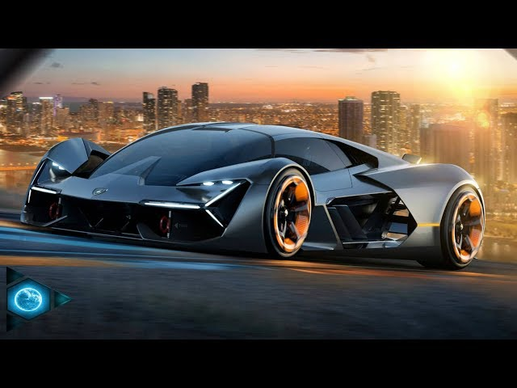

La visión de una princesa de Disney suele estar centrada en la superación personal, la valentía y el poder de la bondad, mientras busca un equilibrio entre cumplir con su deber o destino y encontrar la felicidad personal. A lo largo de las historias, las princesas de Disney tienen sueños y deseos que, a menudo, están relacionados con la libertad, la autenticidad y el amor,pero también enfrentan desafíos importantes que les permiten crecer como personas.
Parece que te gustaría saber cuál es la visión de Pocahontas, ¿es eso lo que quisieras preguntar? Si es así, puedo explicar cómo su historia se ajusta a la visión que mencionabas sobre las princesas de Disney.Pocahonta es una de las princesas de Disney con una visión bastante única, ya que su historia no está centraden la típica narrativa de "búsqueda de amor" o "superación personal" a través de un cambio drástico en su vida, sino en la armonía entre dos culturas diferentes, la conexión con la naturaleza y la construcción de puentes de entendimiento entre pueblos.
La visión de los autos deportivos está centrada en el concepto de rendimiento, diseño y emoción. Estos vehículos no solo están diseñados para ofrecer un alto rendimiento en términos de velocidad, manejo y tecnología, sino que también buscan transmitir sensaciones de exclusividad, lujo y placer al conducir. A continuación, te describo los aspectos clave de la visión que representa un auto deportivo: